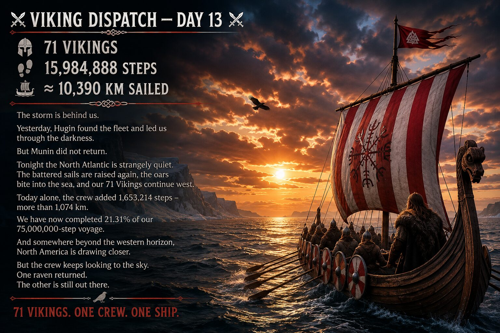
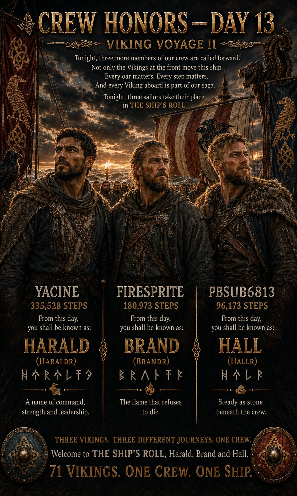
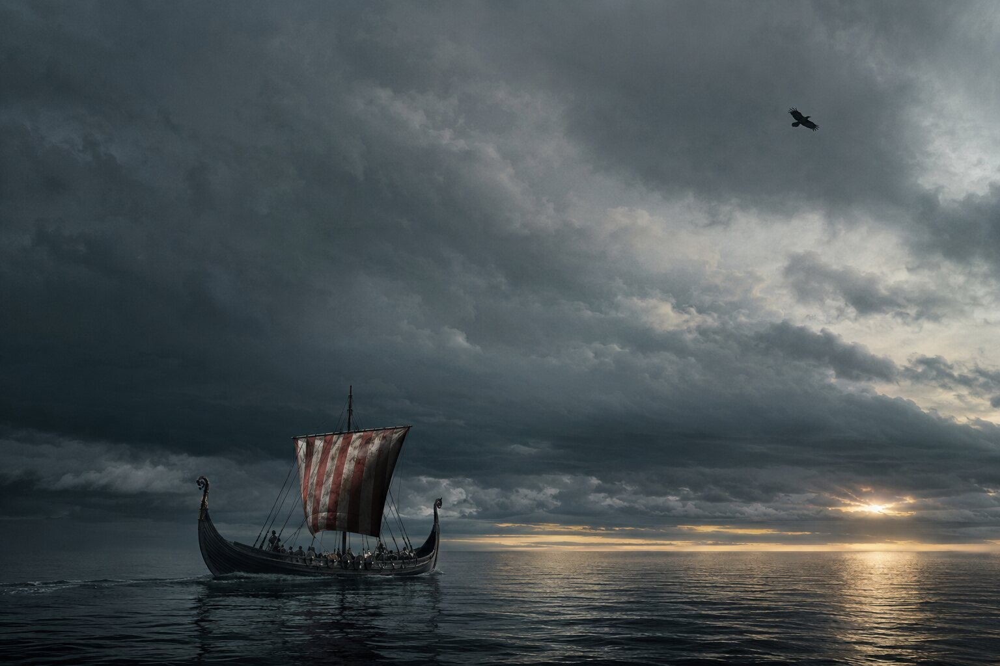
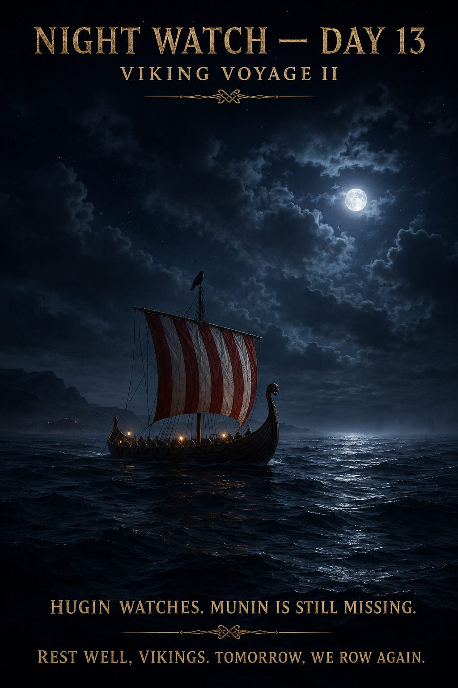

THE RHYTHM OF THE OARS
Real activity in Pacer moves the ship. These are the latest verified numbers from our crew.


The crew has found its rhythm. Hugin has returned. Munin has not.
THE RHYTHM OF THE OARS
72 Vikings have carried the fleet to 17,840,511 steps — approximately 11,596.3 km since Greenland.
During Day 14 alone, the crew added 1,855,623 steps — approximately 1,206.2 km. The previous target was 1,255,641 steps, so the fleet finished 599,982 steps above target.
With 46 days remaining after Day 14, the required pace has fallen to approximately 1,242,598 steps per day.
72 VIKINGS. ONE CREW. ONE SHIP.
GREENLAND ➜ FLORIDA

CHAPTER I — THE CROSSING
The fleet has sailed 17,840,511 steps — approximately 11,596.3 km — from Greenland toward the North American mainland. 23.79% of the 75,000,000-step voyage is complete.
57,159,489 steps — approximately 37,153.7 km — remain before Florida. Only 909,489 steps — approximately 591.2 km — separate the fleet from the first great milestone and the end of Chapter I.

THE VOYAGE BECOMES A LIVING SAGA
THE POWER OF SIXTY OARS
Today's Viking Dispatch described our crew finding a shared rhythm after the storm. But what do we actually know about rowing aboard a Viking warship?
Skuldelev 2 was an 11th-century long warship. Its modern reconstruction, Sea Stallion from Glendalough, carries 60 oars and a crew of approximately 60–70 people.
Moving such a ship required strength, endurance and coordination across the entire crew.
Did the Vikings sing to keep time while rowing? The honest answer is that we do not know. Calls, commands or rhythm may have helped, but no Viking Age rowing song survives as reliable historical evidence.
The rhythm in today's dispatch therefore belongs to OUR SAGA — inspired by the real need for a crew to move together.
A question from our friend Starfire sent us searching for the truth behind the oars.
SIXTY OARS. ONE RHYTHM. ONE SHIP.
THE SAGA MAY BE WILD. THE HISTORY MUST BE TRUE.

THE RAVEN BEYOND THE HORIZON
Far above the mortal sea, Hugin returned to Odin's hall.
The raven carried visions of shattered clouds, rising sails and seventy-two Vikings pulling their fleet westward with one shared rhythm.
Odin listened. Then he looked toward the empty perch beside him.
Thought had come home. Memory had not.
“Where is your brother?” Odin asked. Hugin gave no answer.
Beyond the open hall, the western horizon burned beneath the moon. Somewhere past the reach of Odin's sight, Munin remained silent.
Below, the fleet continued across the dark sea, unaware that even the Allfather was waiting for the missing raven.
HUGIN RETURNED. MUNIN DID NOT.
TO BE CONTINUED…

THE RHYTHM RETURNS
This saga belongs to every member of our club.
Every step moves the fleet. Every question and comment helps shape what happens next.
After the storm came silence. Then one oar entered the water. Another followed.
Soon, the rhythm travelled from Viking to Viking and ship to ship. Seventy-two members carried the fleet forward together.
Their combined steps brought our voyage to 17,840,511 — and changed the story.
A question from Starfire sent us searching for the truth behind the rhythm of Viking oars. The answer became part of our HISTORY, while the crew's achievement became part of OUR SAGA.
Above the fleet, Hugin circled in the clearing sky. But beside him, the sky remained empty. Munin had still not returned.
THIS IS NOT A SAGA WRITTEN FOR OUR CREW.
IT IS A SAGA WRITTEN BY OUR CREW.
72 VIKINGS. ONE CREW. ONE LIVING SAGA.
TO BE CONTINUED…

THREE MORE NAMES ENTER THE SHIP'S ROLL
EVERY OAR MATTERS
Crew Honors belongs to OUR SAGA. It is a Viking Voyage II tradition, not a claimed reconstruction of a documented Viking Age ceremony.
Every honored member receives an individual Viking name and a distinct appearance within our living saga. Once entered into THE SHIP'S ROLL, both remain with that sailor for the rest of the voyage.

NAMES CARRIED ABOARD
Permanent pairings verified in the current working register. Entries still under historical review are not presented here as final.
THE OARS FALL SILENT
After a long day of rowing, the oars are finally secured against the ships.
Across the fleet, seventy-two tired Vikings rest beneath their cloaks as the North Atlantic carries them quietly westward.
Small lights glow aboard the distant ships. Even in darkness, the crew remains together.
High upon the carved prow, Hugin keeps watch beneath the moon. But the vast sky beside him remains empty. Munin has still not returned.
Tonight, the sea is calm. The ships are safe. The crew may rest.
HUGIN WATCHES. MUNIN IS STILL MISSING.
REST WELL, VIKINGS.
72 VIKINGS. ONE CREW. ONE SHIP.

DAY 13 — THE SILENCE AFTER THE STORM
The previous day's visual record remains aboard as part of the voyage archive. Tap any picture to enlarge it.





POWERED BY OUR CREW
Viking Voyage II is a community step challenge whose voyage is driven by real activity recorded by participants in the Pacer app. Pacer is the platform used by our crew; Nordic Viking Heritage and Viking Voyage II are an independent community project.
THE HISTORY MUST BE TRUE
Historical material is kept separate from OUR SAGA and checked against archaeological and scholarly sources. Day 14's section uses information from the Viking Ship Museum in Roskilde about Skuldelev 2: a long warship dated to around 1042, equipped with 60 oars and crewed by approximately 65–70 people. The museum's reconstruction is Sea Stallion from Glendalough.
No surviving Viking Age rowing song has been presented as reliable evidence; the shared rowing rhythm belongs to OUR SAGA.
VIKING SHIP MUSEUM — SKULDELEV 2
VIKING SHIP MUSEUM — SEA STALLION FROM GLENDALOUGH
ISOF — NORDISKT RUNNAMNSLEXIKON
“Every step counts.
Every Viking matters.”